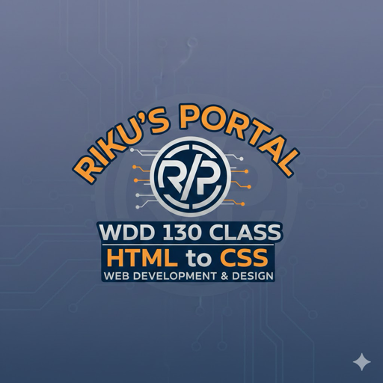

Overview
Purpose
The purpose of the Dry Oar Rafting website is to attract adventure seekers and families to book whitewater rafting trips. We aim to showcase the excitement of the rapids, the beauty of the scenery, and the safety of our guided tours. The site will provide essential information about trip packages, pricing, and what to expect, making it easy for users to plan their next adventure.
Audience
Our primary audience includes adventure enthusiasts, families looking for summer vacation activities, and corporate groups seeking team-building experiences. They are typically aged 18-50, love the outdoors, and are looking for a memorable and safe experience. They value clear information on safety, difficulty levels of rapids, and pricing.
Branding
Website Logo

Style Guide
Color Palette
| Primary | Secondary | Accent 1 | Accent 2 | Accent 3 | Accent 4 |
|---|---|---|---|---|---|
| #1B263B | #415A77 | #F39C12 | #F8F9FA | #A8DADC | #1D1D1D |
Typography
Heading Font: Rock Salt
Paragraph Font: Raleway
Normal paragraph example
The best Whitewater Rafting in Colorado, White Water Rafting Company offers rafting on the Colorado and Roaring Fork Rivers in Glenwood Springs. Since 1974, we have been family owned and operated, rafting the Shoshone section of Glenwood Canyon and beyond.
Colored paragraph example
Trips vary from mild and great for families, to trips exclusively for physically fit and experienced rafters. No matter what type of river adventures you are seeking, White Water Rafting Company can make it happen for you.
Navigation with Hover
Site Map
Wireframes
Home